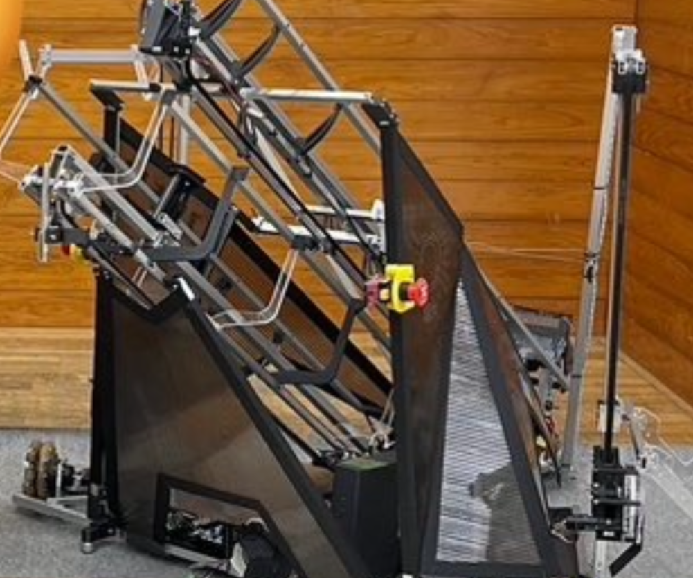

アイデア対決・全国高等専門学校ロボットコンテスト（高専ロボコン）とは、毎年異なる競技課題に対して、アイデアを駆使したロボットを製作し、競技を通じてその成果を競うものです。
2024年度の競技課題は、「ロボたちの帰還」で、ロボットが別のロボットを発射し、狙った点に着地させるピンポイント着地や、着地したロボットがオブジェクトを回収して元いた地点に帰還することなどが求められました。 ロボットを飛ばすということから、強力な発射機構、発射に耐えうる機体が必要となり、練習時は何度もロボットを壊しました。その中でも私は、飛ばされるロボットのメインフレームと、オブジェクトを持って帰る帰還を担当し、前年度に引き続き全国優勝果たし、高専ロボコン二連覇を達成しました！！
また、前年度に引き続きろぼっと倶楽部の会計を担当し、約100万円ほどのお金の管理を行いました。
